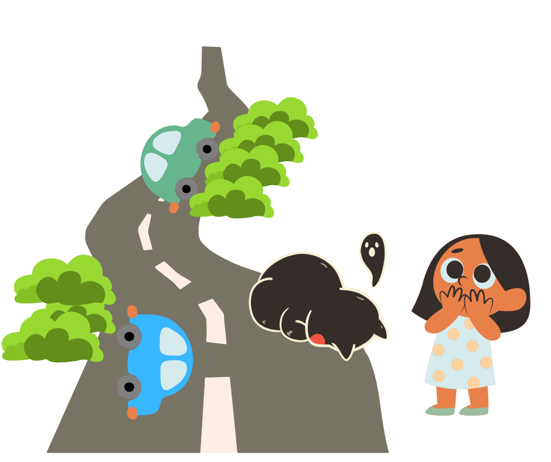
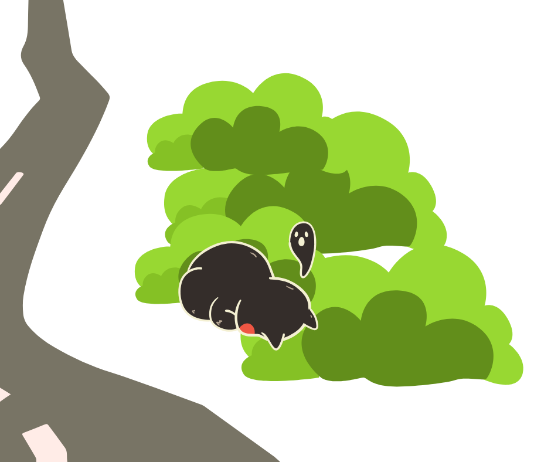
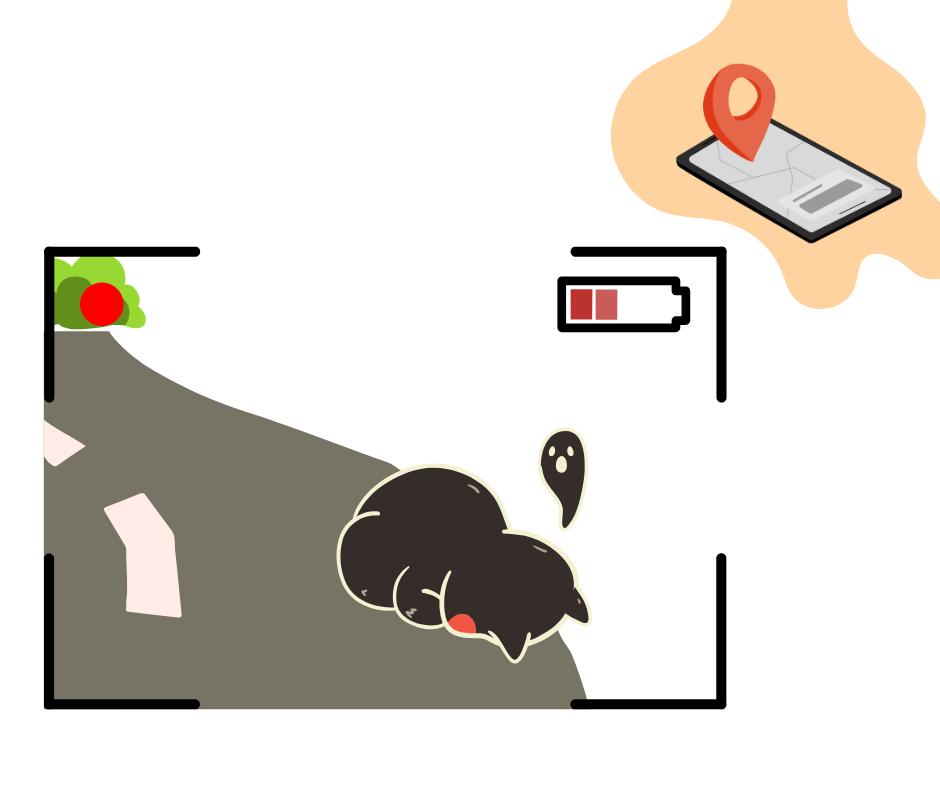
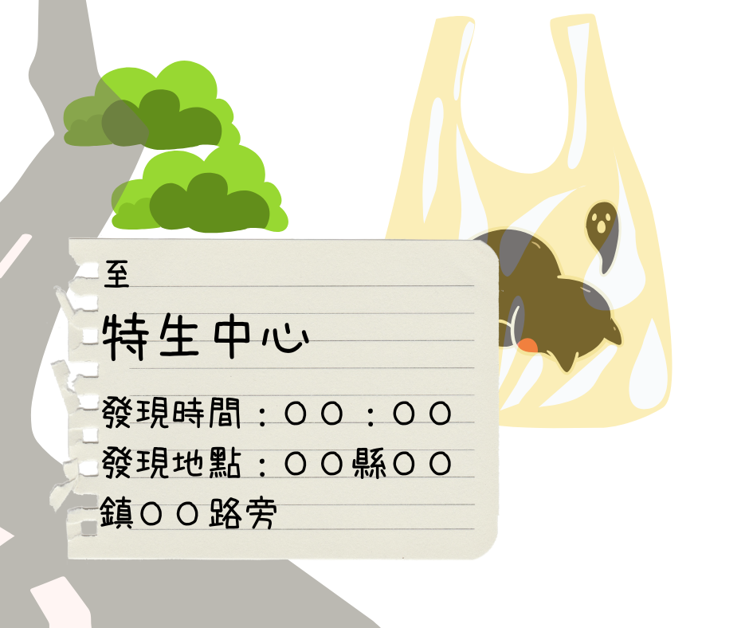

緣起
之所以會撰寫路殺相關議題，是一位一次去科教館時，看到路殺議題的呈現，非常驚訝一起去得大家對於路殺的議題如此震驚與陌生，因為路殺這件事情，在我的記憶哩，就是從小到大被教導的事情..
寫這一個網站，資料來源皆為台灣動物路死觀察網，感念所有人的付出，讓路殺這件事情能漸漸出現在公眾視野，並得到重視與工程改善
之所以會撰寫路殺相關議題，是一位一次去科教館時，看到路殺議題的呈現，非常驚訝一起去得大家對於路殺的議題如此震驚與陌生，因為路殺這件事情，在我的記憶哩，就是從小到大被教導的事情..
寫這一個網站，資料來源皆為台灣動物路死觀察網，感念所有人的付出，讓路殺這件事情能漸漸出現在公眾視野，並得到重視與工程改善
路殺號發於各個角落，尤其是進入淺山地帶，當動物們與人類生活圈高度重疊時，不曉得馬路為何物?有甚麼風險的小動物們，就會蹦蹦跳跳的出現
然後，碰，的被撞傷或撞死在路上。

驚恐的同時，請注意自身安全，並進行下一步的回報作業！

*二次路殺:小動物為了吃已經被路殺的遺體，而在同一處再次被撞到。

可以利用周圍物品作為比例尺，照片環境等呈現，幫助鑑定!

遺體可協助完成鑑定、了解傷勢等...
你提供的每一筆資料，都可以是保護動物的重要分析資料來源~